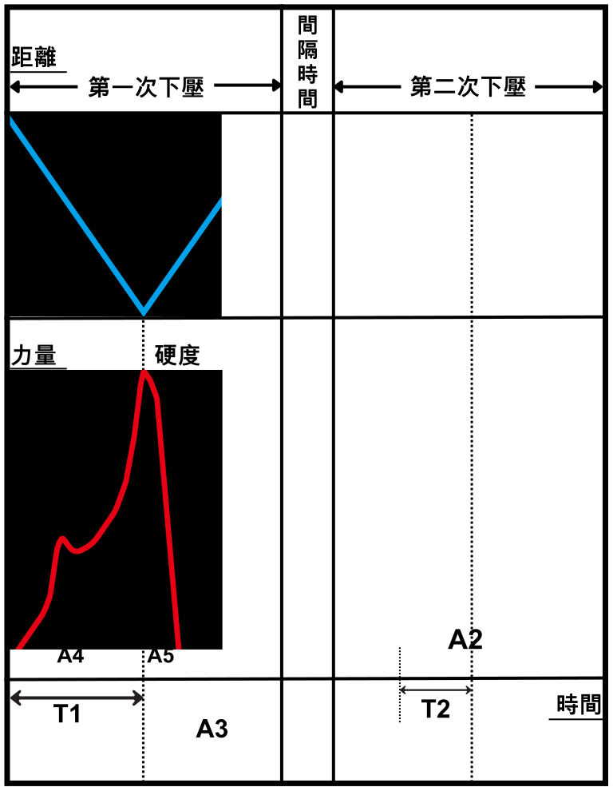

什麼是TPA質地分析儀？
TPA質地分析儀（Texture Profile Analysis）是專業的物性測定儀設備，採用先進的雙重壓縮技術進行全質構分析。這套精密的質地分析儀系統能夠準確模擬人類咀嚼過程，透過專業的TPA探頭對食品樣品進行全方位質地特性檢測。
我們的物性測定儀原理基於精密的力學測量技術，自1960年代發展至今，已成為食品科學、品質控制領域不可或缺的專業檢測設備。透過標準化的TPA測試流程，能夠提供8-9項重要的質地參數數據。
TPA質地分析儀 主要應用領域：
烘培製品質地檢測
乳製品分析
凝膠食品測試
肉類加工品評估
糖果點心檢測
蔬果質地分析
保健食品檢測
寵物食品評估
物性測定儀原理與TPA測試流程
物性測定儀原理基於精密的機械壓縮系統，搭配高靈敏度力量感測器，能夠準確記錄測試過程中的力量變化。TPA探頭的選擇對測試結果具有關鍵影響，需根據不同樣品特性進行適當配置。

TPA質地分析儀透過精密的雙重壓縮程序，配合專業TPA探頭，模擬人類咀嚼過程，獲得準確的質地數據
第一次咬合 (Bite 1)
TPA探頭由原本的起始點往下移動，開始進行第一次壓縮測試。
觸發與目標設定
探頭到達觸發點(根據Trigger force設定)，系統開始計算目標距離(Target)，接著往下直到達成預設目標。
樣品恢復階段
TPA探頭返回到先前的觸發點，並開始停留，停留時間根據樣品恢復速度特性而定。
第二次咬合 (Bite 2)
停留時間完畢後，探頭由觸發點再度向下進行第二次壓縮。
達到測試目標
到達第一次下壓時的相同目標深度，完成雙重壓縮循環。
返回起點完成測試
TPA探頭由目標點往上回到原始起點位置，完成完整的TPA測試循環。
TPA探頭選擇與規格說明
TPA探頭的選擇是影響測試結果準確性的關鍵因素。不同類型的TPA探頭適用於不同特性的樣品，專業的質地分析儀系統提供多種規格選擇。
圓柱形TPA探頭
規格：直徑 25mm, 35mm, 50mm
應用：標準TPA測試，適用於大多數食品樣品，如烘培製品、肉類加工品等。
特點：均勻受力分布，測試結果重現性佳。
平板型TPA探頭
規格：75mm x 75mm 方形平板
應用：大面積樣品測試，適用於薄片狀食品、餅乾、薄餡餅等。
特點：接觸面積大，能提供更穩定的測試數據。
球形TPA探頭
規格：直徑 5mm, 12.7mm
應用：小樣品或局部測試，適用於水果、凝膠、軟糖等。
特點：點接觸測試，能檢測局部質地特性。
針形TPA探頭
規格：直徑 2mm, 長度 50mm
應用：穿刺測試，適用於評估表皮硬度或內部結構。
特點：高精度穿透測試，適合脆性分析。
質地分析儀技術規格
專業質地分析儀的技術規格決定了測試的精度與可靠性。我們的物性測定儀採用最先進的測量技術，確保每次TPA測試都能獲得精確的數據。
核心技術規格
力量測量範圍
0.1N - 1000N (高精度負荷元)
測試速度範圍
0.01 - 40 mm/s (可程式控制)
位移精度
±0.01mm (高精度位移控制)
數據採樣頻率
最高 2000 Hz (確保數據完整性)
操作溫度範圍
5°C - 80°C (溫控測試艙可選)
樣品台尺寸
標準 200mm x 200mm (可客製化)
軟體相容性
Windows 10/11, 支援多語言介面
TPA測試曲線圖與計算公式
TPA質地分析儀測試過程的力量-時間曲線圖，清楚標示各參數的計算區域與物性測定儀原理應用

TPA測試曲線圖：顯示雙重壓縮過程中的力量變化，標示出硬度、彈性、粘聚性等關鍵參數的測量區域。
圖中A1-A5代表不同的面積區間，T1-T2代表時間間隔，用於計算各項質地參數。專業的質地分析儀軟體會自動進行這些計算。
八大質地參數計算公式
TPA參數定義與應用解析
深入了解每個TPA參數的物理意義與在質地分析儀檢測中的實際應用價值
硬度 (Hardness) - TPA核心參數
最直接反應口感的指標，在TPA質地分析中直接影響咀嚼性、膠著性及凝聚性。質地分析儀透過精確測量第一次壓縮的最大力值來評估樣品硬度。廣泛應用於烘培製品、肉類加工品的品質控制。
脆度 (Fracturability) - 酥脆特性檢測
針對具有酥脆外殼樣品的專有參數，如餅乾、酥餅等。多數樣品無法測得此參數，TPA質地分析儀軟體會根據樣品特性自動判斷並顯示。適用於評估烘培製品的酥脆度。
粘性 (Adhesiveness) - 黏著特性分析
樣品經過TPA探頭加壓變形後，表面黏性產生的負向力量。在食品領域可解釋為黏牙性口感，是評估糖果、軟糖、年糕等產品的重要指標。
彈性 (Springiness) - 彈性恢復能力
評估食物在第一咬結束與第二咬開始間的恢復高度。物性測定儀透過時間比值計算，廣泛應用於魚糜製品、凝膠類食品的彈性評估。
咀嚼性 (Chewiness) - 綜合口感指標
定義為膠著性×彈性，代表咀嚼固體食物所需能量。TPA質地分析中的重要複合參數，主要用於固體、半固體食品的口感描述，如肉類、年糕、QQ糖等。
膠著性 (Gumminess) - 半固體特性
定義為硬度×凝聚力，半固體食品具有低硬度、高凝聚力特點。此指標專用於描述半固體食品口感，如布丁、果凍、軟質起司等產品的質地分析。
粘聚性 (Cohesiveness) - 結構完整性
第一壓縮與第二壓縮正受力面積比值，反映樣品內部結構完整性。TPA質地分析儀透過面積比計算，評估食品的結構穩定性與抗拉伸強度。
回復性 (Resilience) - 快速恢復能力
測量樣品恢復變形的速度和力量，定義為第一下壓形變前後面積比值。物性測定儀需使用較慢測試速度以確保樣品有足夠恢復時間，提高測量準確性。
TPA質地分析儀常見問題解答
如何選擇合適的TPA探頭？
TPA探頭選擇需根據樣品特性決定：硬質樣品建議使用小直徑探頭(25mm)以集中壓力；軟質樣品使用大直徑探頭(50mm)以分散壓力；薄片狀樣品選用平板型探頭；局部測試選用球形或針形探頭。我們的技術團隊可協助您選擇最適合的TPA探頭配置。
TPA測試的樣品準備要求為何？
樣品厚度建議15-20mm，確保有足夠變形空間；樣品表面應平整，避免影響TPA探頭接觸；測試前應讓樣品達到室溫平衡；樣品尺寸應大於探頭直徑2倍以上。遵循標準化的樣品準備程序可確保TPA質地分析結果的重現性。
物性測定儀的校正週期如何安排？
建議每月進行一次標準校正，使用標準校正塊驗證質地分析儀的準確性；每日測試前進行基本功能檢查；年度專業校正服務確保設備長期穩定性。定期校正是確保物性測定儀測試數據準確性的關鍵。
如何解讀TPA測試報告？
TPA質地分析儀軟體提供詳細的圖形化報告，包含原始曲線圖、計算參數表、統計分析等。全質構分析結果。
TPA設備的維護保養要點？
每日清潔TPA探頭與樣品台，確保無殘留物質；定期備份測試數據與參數設定。完善的維護保養可延長質地分析儀使用壽命並確保測試精度。
聯絡我們 - TPA質地分析專業諮詢
我們是專業的TPA質地分析儀供應商，提供完整的Texture Profile Analysis解決方案。從設備選型、TPA探頭配置、安裝調試到技術培訓，我們的專業團隊為您提供全方位服務支援。
我們的專業服務
設備諮詢
專業的質地分析儀選型建議
實驗應用
TPA質地分析操作與數據解讀
探頭定制
客製化TPA探頭設計服務
維修支援
專業的設備維護與校正服務
立即聯絡我們
📞 諮詢專線：(03)3819203
📧 電子信箱：info@rapidta.com.tw
🌐 官方網站：www.rapidta.com.tw